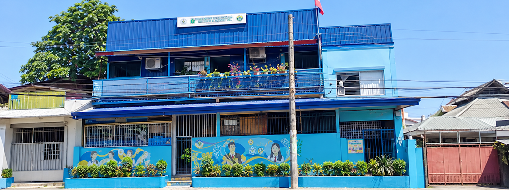

BRENDAN
JADRIAN
DAGOC
I graduated with a Bachelor of Arts in Hotel and Restaurant Management and currently work at JH Cerilles State College, Pagadian Annex. I am hardworking, adaptable, and committed to learning. I chose Professional Education as my second course to broaden my knowledge, develop teaching skills, and make a positive impact through education.

Lucan Central Colleges
Home of Excellence • Nexus Batch 2026
My journey in the Professional Education Curriculum (PEC) at Lucan Central Colleges has been an important part of my personal and academic growth. As an ordinary student preparing for a future career in teaching, I experienced different situations that helped me discover my strengths and recognize the areas where I still need improvement.
One of the difficulties I encountered throughout my studies was overcoming my nervousness when speaking in front of my classmates. Whether during oral recitations, group presentations, or class activities, I often found it difficult to share my ideas confidently. Even when I knew the answer, my fear and anxiety sometimes prevented me from expressing what I wanted to say. These experiences made me realize that knowing something is not always enough; I also need the courage and confidence to communicate it effectively.
Promotes knowledge, truth, and excellence for students’ holistic development through quality education and training. — Lucan Central Colleges
Through my PEC subjects, I learned valuable lessons that went beyond academic knowledge. They helped me improve my ability to communicate, cooperate with others, manage my responsibilities, analyze situations, and develop the proper attitude expected of a future educator. Although public speaking remains an area I want to improve, I am proud of the progress I have made so far. My experience at Lucan Central Colleges has taught me that becoming a good teacher requires patience, continuous learning, and a willingness to face challenges. I am grateful for these experiences because they have encouraged me to become more confident and better prepared for my future profession.